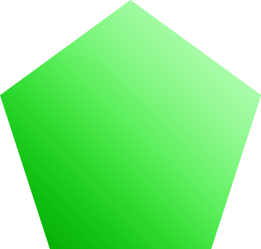

How to teach shape recognition to pre-schoolers with fun activities
| Shapes | ||
|---|---|---|
circle |
triangle |
Rectangle |

square |
Heart |

Oval |

Star |
Diamond |

Pentagon |
Hexagon |

Octagon |
Semicircle |
Put away those flashcards, my friends. These fun activities will help your preschoolers learn to identify circles, triangles, squares, rectangles, and ovals.
- Build shape recognition using toys.
- Make circles by painting with spools.
- Play a shape game while also recognizing colors.
- Make circles with a DIY circle stamper.
- Mix colors while stamping circles from paper tubes.
- Take apart your nesting toys to stamp shapes with paint.
- Make a simple shape collage.
- Go on a shape hunt at the playground
- Paint with different shapes of foam blocks.
- Make a shape puzzle using blocks you already have.
- Trace shapes on a chalkboard.
- Create a fine motor shape bin.
- Make a shape sorting activity from an ice cube tray.
- Make paper roads in different shapes and trace with cars.
- Play shape hopscotch indoors!
- Use colored construction paper to create a train color sorting activity.